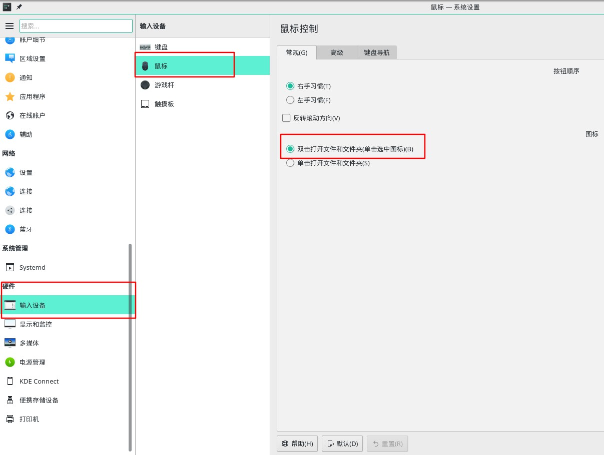
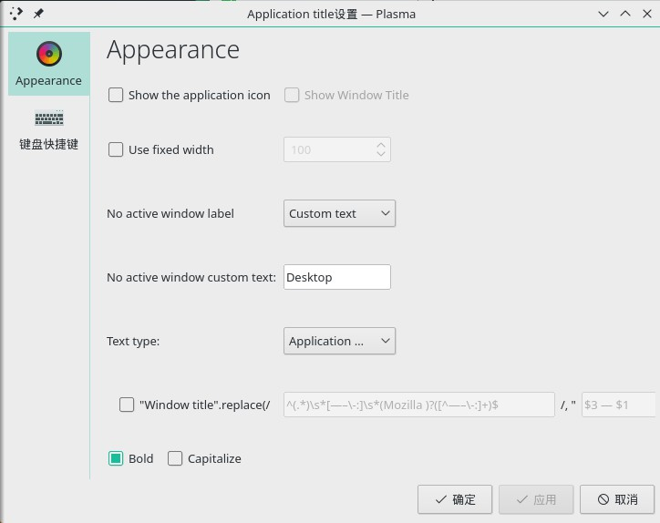
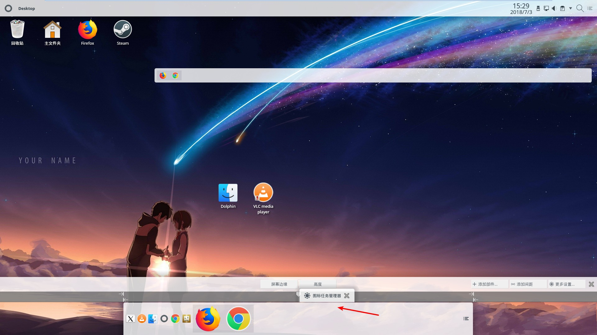
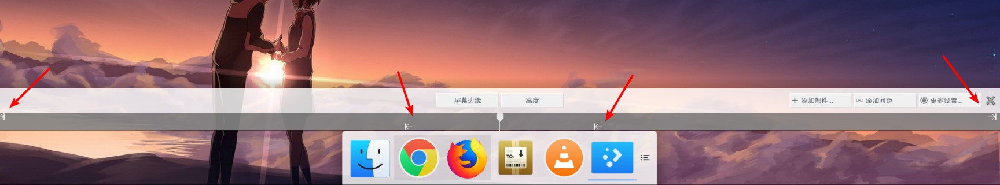
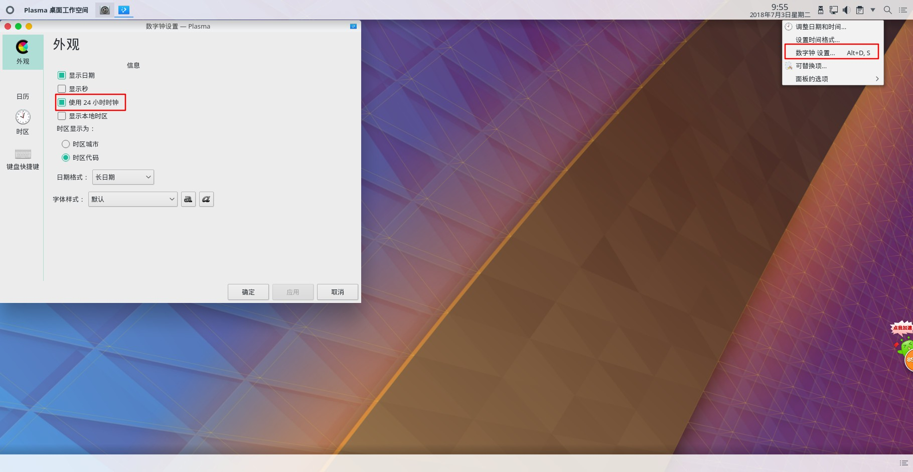
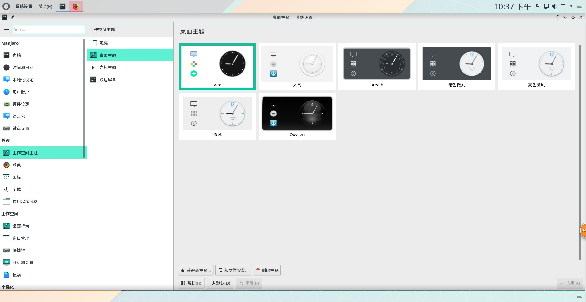

KDE桌面环境下美化
在关于系统哦中可以看到KDE plasma的版本 我当前是5.12.5
鼠标改单击打开为双击

桌面设置为
总数设置为4个
行数2
快捷键切换桌面
切换桌面是 桌面布局 壁纸 桌面部件 面板都是一样的
活动
不同桌面不同背景KDE5中不能用了,用活动代替好了
在 系统设置-> 桌面行为 -> 活动 里创建一个新活动。
不同活动的 桌面布局 壁纸 桌面部件可以不同,但面板是一样的
快捷键是 meta+(shift+)tab
右键配置桌面(alt+d,alt+s)
壁纸有两种布局:文件夹布局和桌面布局(我的为什么切换一下就黑屏,然后要重启才好). 还能设置壁纸类型,是图片还是幻灯片或者每日一图.缩放功能
文件夹布局的区别是会默认显示主目录下/desktop 桌面文件夹中的内容.
添加部件
在左边显示的部件中,选全局菜单拖到panel中,
应用程序菜单这3个类似用3种不同的方式打开所有程序.就是程序启动器,还能自定义显示那些类别
装global menu,但这个不太好,比如用火狐显示不了菜单,文件夹可以.
额外装一个application title 只用来看应用名字.随便按下图设置一下.

关于类似dock的,可以 加个空白panel 然后添加部件(图标任务管理器不要直接把图标拖入panel,不然大小不好设置),然后把宽度调一下,上面2个箭头不动,下面2个箭头设置为图标宽度好了.(记得要去设置图标任务管理器的行数只有1行才会达到自动扩大的效果)


系统设置中
日期和时间的24小时格式设定在右击时间设置,不在系统设置中.数字时钟设定,注意24小时的选项框多点几次效果不同(三角和正方形).

外观
工作空间主题这里可以设置: 默认主题, 桌面主题(这个和观感差不多吧,只是小范围,桌面图片在桌面上右键配置桌面中有,改为aex),光标样式(改为capitaine cursors)和 登录时的欢迎屏幕的图片(登录框的样式在工作空间->开机和关机中设置)

颜色就是设置配色问题
图标的话设置各种仿win mac的桌面图标 挺好的(macOS icons但有些图标不全,我换了个别的mac风格macos-sierra-CT的)
字体
应用程序风格:这里设置最大最小这种按钮的样式,还能自己设置放左放右边,放多少东西.(窗口装饰中主题设置为breezemite或者yosemite,按钮左右位置换一下)
工作空间
可以设置桌面行为
窗口行为:设置工作空间, 屏幕边缘(类似鼠标移到下边是显示桌面),桌面特效,触摸屏,虚拟桌面(这个用不到了,改用活动来设置好). 锁屏的时间和快捷键.活动,meta+tab切换着用
快捷键
开机和关机中可以设置登录屏幕的样式,自动启动程序,后台服务,桌面会话也就是登陆后的程序还是原来的么(类似浏览器的那个功能)
搜索
安装软件
1 | sudo pacman -S vim && vim-powerline |
移除不必要的东西
1 | sudo pacman -R konversation |